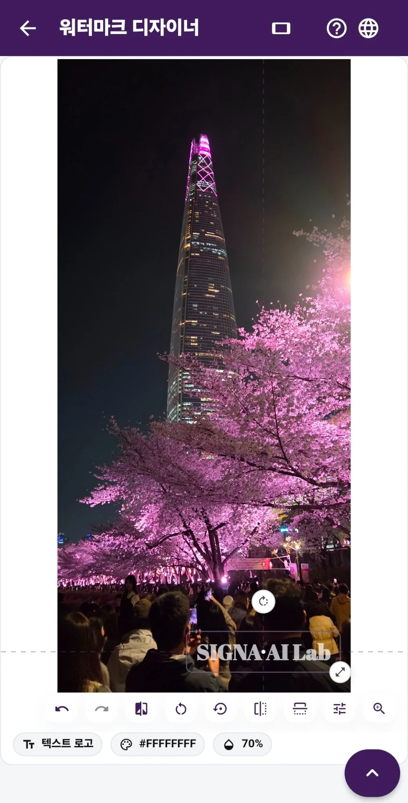

01 · 워터마크 · 워터마크 삽입 횟수 제한 없음 · 무료
워터마크, 한 번에 최대 12장
기본 글꼴로 이름을 쓰거나 내 로고를 불러오세요. 이름이나 이니셜로 로고를 만들고, 종이에 쓴 손글씨를 사진으로 불러오거나 화면에 직접 사인해 워터마크로 쓸 수도 있어요. 글꼴·색·투명도를 고른 뒤 위치와 크기는 사진마다 맞추고, 마음에 든 디자인은 저장해 다음에도 쓰세요. 옵션을 켜면 보이지 않는 SIGNA 신호도 함께 넣을 수 있어요.
사진마다 워터마크 위치를 추천해요. 추천받은 위치에서 시작하고, 원하는 곳으로 직접 옮길 수도 있어요. 마음에 들지 않으면 추천 전 위치로 되돌리세요.
가로·세로 사진 편집 · 최대 12장 · 사진별 위치 조정 · 디자인 저장 · Pro 추가 글꼴
 앱 화면 크게 보기 ↗
앱 화면 크게 보기 ↗
